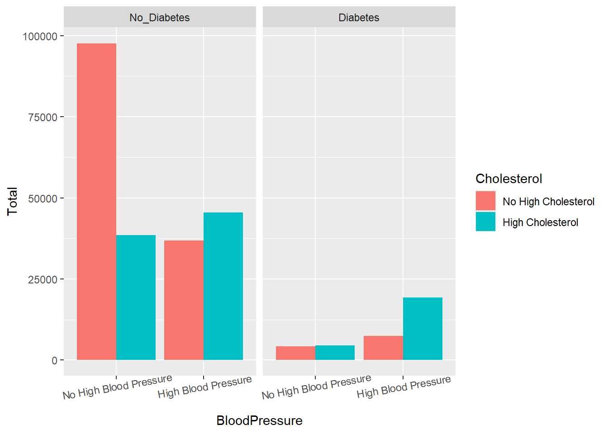

Warning: package 'tidyverse' was built under R version 4.3.3
Warning: package 'ggplot2' was built under R version 4.3.3
Warning: package 'tidyr' was built under R version 4.3.3
Warning: package 'readr' was built under R version 4.3.3
Warning: package 'purrr' was built under R version 4.3.3
Warning: package 'lubridate' was built under R version 4.3.3
── Attaching core tidyverse packages ──────────────────────── tidyverse 2.0.0 ──
✔ dplyr 1.1.4 ✔ readr 2.1.5
✔ forcats 1.0.0 ✔ stringr 1.5.1
✔ ggplot2 3.5.1 ✔ tibble 3.2.1
✔ lubridate 1.9.3 ✔ tidyr 1.3.1
✔ purrr 1.0.2
── Conflicts ────────────────────────────────────────── tidyverse_conflicts() ──
✖ dplyr::filter() masks stats::filter()
✖ dplyr::lag() masks stats::lag()
ℹ Use the conflicted package (<http://conflicted.r-lib.org/>) to force all conflicts to become errors
library(ggplot2)
Introduction
The data we will be examining and modeling in this project is a data set with 253,680 survey responses to the CDC’s BRFSS2015. The response variable we will be modeling is a binary variable of whether or not the observation had or did not have diabetes. Some predictors we will examine are: - HighBP (0 = no high BP / 1 = high BP) - HighChol (0 = no high cholesterol / 1 = high cholesterol) - Smoker (Have you smoked at least 100 cigarettes in your entire life? 0 = no / 1 = yes) - Sex (0 = female / 1 = male) - Age (13-level age category (_AGEG5YR see codebook)) - Education (Education level (EDUCA see codebook)) - Income (Income scale) - HvyAlcoholConsump (Is or is not a heavy drinker) - PhysHlth (How many days during the past 30 were you not physically active) - MentHlth (How many days during the past 30 were you not mentally healthy) - BMI (Body Mass Index) ### Purpose of EDA and Modeling Goals Our EDA gives us insight to our data and helps guide the modeling that we will be conducting. This can be accessed via the link at the bottom of the page. The purpose of our modeling will be trying to generate the best possible model at predicting whether or not someone has diabetes, based on the values of their predictors. We will be using predictive analysis with a training and test set via the caret package.
Data
Reading in Data
data <-read_csv("diabetes_binary_health_indicators_BRFSS2015.csv")
Rows: 253680 Columns: 22
── Column specification ────────────────────────────────────────────────────────
Delimiter: ","
dbl (22): Diabetes_binary, HighBP, HighChol, CholCheck, BMI, Smoker, Stroke,...
ℹ Use `spec()` to retrieve the full column specification for this data.
ℹ Specify the column types or set `show_col_types = FALSE` to quiet this message.
Factor Conversions
We will now convert the necessary columns to factors, specifying appropiate labels for each.
data_factors <- data |>mutate(Diabetes_binaryF =factor(Diabetes_binary, levels =c("0","1"), labels =c("No_Diabetes", "Diabetes")),HighBPF =factor(HighBP, levels =c("0","1"), labels =c("No High Blood Pressure", "High Blood Pressure")),HighCholF =factor(HighChol, levels =c("0","1"), labels =c("No High Cholesterol", "High Cholesterol")),CholCheckF =factor(CholCheck, levels =c("0","1"), labels =c("No Cholesterol Check in 5 Years", "Yes Cholesterol Check in 5 Years")),SmokerF =factor(Smoker, levels =c("0","1"), labels =c("Has not smoked at least 100 cigarettes", "Has smoked at least 100 cigarettes")),StrokeF =factor(Stroke, levels =c("0","1"), labels =c("Has had stroke", "Has not had stroke")),HeartDiseaseorAttackF =factor(HeartDiseaseorAttack, levels =c("0","1"), labels =c("Has not had coronary heart disease or myocardial infarction", "Has had coronary heart disease or myocardial infarction")),PhysActivityF =factor(PhysActivity, levels =c("0","1"), labels =c("Was not physically active within past 30 days")), FruitsF =factor(Fruits, levels =c("0","1"), labels =c("Does not consume fruit 1 or more times per day", "Does consume fruit 1 or more times per day")),VeggiesF =factor(Veggies, levels =c("0","1"), labels =c("Does not consume vegetables 1 or more times per day", "Does consume vegetables 1 or more times per day")),HvyAlcoholConsumpF =factor(HvyAlcoholConsump, levels =c("0","1"), labels =c("Is a heavy drinker", "Is not a heavy drinker")),AnyHealthcareF =factor(AnyHealthcare, levels =c("0","1"), labels =c("Has healthcare", "Does not have healthcare")),NoDocbcCostF =factor(NoDocbcCost, levels =c("0","1"), labels =c("Could afford doctor within past year", "Could not afford doctor within past year")),GenHlthF =factor(GenHlth, levels =c("1","2","3","4","5"), labels =c("Excellent","Very Good","Good","Fair","Poor")),MentHlthF =factor(MentHlth,levels =c("0","1","2","3","4","5","6","7","8","9","10","11","12","13","14","15","16","17","18","19","20","21","22","23","24","25","26","27","28","29","30"),labels =c("0 Days", "1 Day", "2 Days", "3 Days", "4 Days", "5 Days", "6 Days","7 Days", "8 Days", "9 Days", "10 Days", "11 Days", "12 Days", "13 Days", "14 Days", "15 Days", "16 Days", "17 Days", "18 Days", "19 Days", "20 Days", "21 Days", "22 Days", "23 Days", "24 Days", "25 Days", "26 Days", "27 Days", "28 Days", "29 Days", "30 Days")),PhysHlthF =factor(PhysHlth,levels =c("0", "1","2","3","4","5","6","7","8","9","10","11","12","13","14","15","16","17","18","19","20","21","22","23","24","25","26","27","28","29","30"),labels =c("0 Days","1 Day", "2 Days", "3 Days", "4 Days", "5 Days", "6 Days","7 Days", "8 Days", "9 Days", "10 Days", "11 Days", "12 Days", "13 Days", "14 Days", "15 Days", "16 Days", "17 Days", "18 Days", "19 Days", "20 Days", "21 Days", "22 Days", "23 Days", "24 Days", "25 Days", "26 Days", "27 Days", "28 Days", "29 Days", "30 Days")),DiffWalkF =factor(DiffWalk, levels =c("0","1"), labels =c("Does not have difficulty walking or climbing stairs", "Does have difficulty walking or climbing stairs")),SexF =factor(Sex, levels =c("0","1"), labels =c("Female", "Male")),AgeF =factor(Age, levels =c("1","2","3","4","5","6","7","8","9","10","11","12","13"), labels =c("Aged 18-24", "Aged 25-29", "Aged 30-34","Aged 35-39", "Aged 40-44", "Aged 45-49","Aged 50-54", "Aged 55-59", "Aged 60-64","Aged 65-69", "Aged 70-74", "Aged 75-79","Aged 80 or older")),EducationF =factor(Education, levels =c("1","2","3","4","5", "6"), labels =c("Never attended school or only kindergarten","Grades 1 through 8 (Elementary)","Grades 9 through 11 (Some high school)","Grade 12 or GED (High school graduate)","College 1 year to 3 years (Some college or technical school)","College 4 years or more (College graduate)")), IncomeF =factor(Income, levels =c("1","2","3","4","5","6","7","8"), labels =c("Less than $10,000","Less than $15,000","Less than $20,000","Less than $25,000","Less than $35,000","Less than $50,000","Less than $75,000","More than $75,000")))
ggplot(data = conting_data, aes(x = BloodPressure, y = Total, fill = Cholesterol)) +geom_bar(stat ="identity", position ="dodge") +facet_grid(~ Diabetes) +theme(axis.text.x =element_text(angle =10))

This shows us that the vast majority of the observations are those without diabetes. Of those with diabetes, the majority have high blood pressure and those with high blood pressure are more likely to have high cholesterol as well.
Less than $10,000
Never attended school or only kindergarten 37
Grades 1 through 8 (Elementary) 900
Grades 9 through 11 (Some high school) 1536
Grade 12 or GED (High school graduate) 3594
College 1 year to 3 years (Some college or technical school) 2437
College 4 years or more (College graduate) 1307
Less than $15,000
Never attended school or only kindergarten 25
Grades 1 through 8 (Elementary) 741
Grades 9 through 11 (Some high school) 1465
Grade 12 or GED (High school graduate) 4692
College 1 year to 3 years (Some college or technical school) 3315
College 4 years or more (College graduate) 1545
Less than $20,000
Never attended school or only kindergarten 28
Grades 1 through 8 (Elementary) 740
Grades 9 through 11 (Some high school) 1709
Grade 12 or GED (High school graduate) 6511
College 1 year to 3 years (Some college or technical school) 4664
College 4 years or more (College graduate) 2342
Less than $25,000
Never attended school or only kindergarten 18
Grades 1 through 8 (Elementary) 605
Grades 9 through 11 (Some high school) 1453
Grade 12 or GED (High school graduate) 8029
College 1 year to 3 years (Some college or technical school) 6310
College 4 years or more (College graduate) 3720
Less than $35,000
Never attended school or only kindergarten 22
Grades 1 through 8 (Elementary) 478
Grades 9 through 11 (Some high school) 1268
Grade 12 or GED (High school graduate) 9046
College 1 year to 3 years (Some college or technical school) 8579
College 4 years or more (College graduate) 6490
Less than $50,000
Never attended school or only kindergarten 18
Grades 1 through 8 (Elementary) 293
Grades 9 through 11 (Some high school) 921
Grade 12 or GED (High school graduate) 10872
College 1 year to 3 years (Some college or technical school) 11996
College 4 years or more (College graduate) 12370
Less than $75,000
Never attended school or only kindergarten 13
Grades 1 through 8 (Elementary) 144
Grades 9 through 11 (Some high school) 590
Grade 12 or GED (High school graduate) 9492
College 1 year to 3 years (Some college or technical school) 13248
College 4 years or more (College graduate) 19732
More than $75,000
Never attended school or only kindergarten 13
Grades 1 through 8 (Elementary) 142
Grades 9 through 11 (Some high school) 536
Grade 12 or GED (High school graduate) 10514
College 1 year to 3 years (Some college or technical school) 19361
College 4 years or more (College graduate) 59819